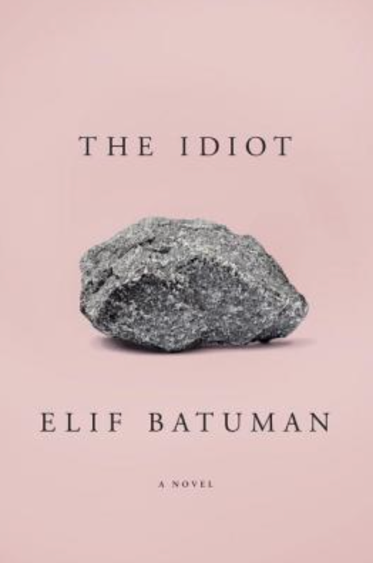
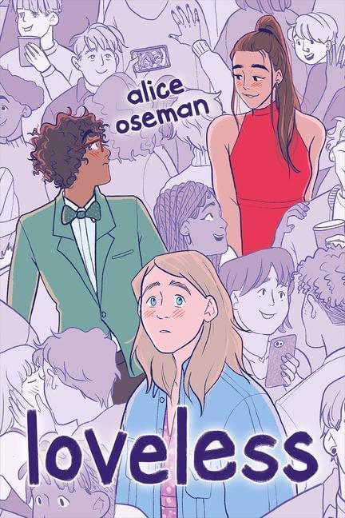
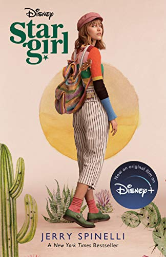

| About |
| Research |
| Classes |
| Movies/TV |
| Reads |
| Blog |
| Palo Alto, CA |
| Resume |
What I'm Reading Currently
 |
 |
 |
What I Plan to Read
Below are some books I anticipate reading in the near future. As one can probably tell, my favorite genre is romantic young adult (YA) fiction. That used to embarrass me quite a bit. It still does—to an extent. I'm also a fan of science fiction, fantasy, and LGBTQ+ fiction. My favorite authors include Rick Riordan, Neil Gaiman, Alice Oseman, and Alix E. Harrow.
| Future Reading List | |
| Love & Luck by Jenna E. Welch | The Ten Thousand Doors of January by Alix E. Harrow |
| Solitaire by Alice Oseman | A Scatter of Light by Malinda Lo |
| Trials of Apollo: The Hidden Oracle by Rick Riordan | The Kane Chronicles: The Red Pyramid by Rick Riordan |
| A Promised Land by Barack Obama | The Love Hypothesis by Ali Hazelwood |
| Radio Silence by Alice Oseman | A Thousand Heartbeats by Kiera Cass |
| Songs of Silver, Flame Like Night by Amélie Wen Zhao | The Grace of Kings by Ken Liu |
My Bookshelf
Here are some books / stories I've read and given a (totally objective and non-biased) rating out of 5 stars. I put a ♣ next to the short stories, and a ♦ next to non-fiction. Are my ratings at least partially based on how pretty the cover art is? Well, yes.
| Book/Story | Author | Rating |
| Percy Jackson: The Lightning Thief | Rick Riordan | ★★★★★ |
| Percy Jackson: Sea of Monsters | Rick Riordan | ★★★☆☆ |
| Percy Jackson: The Titan's Curse | Rick Riordan | ★★★★☆ |
| Percy Jackson: The Battle of the Labyrinth | Rick Riordan | ★★★★☆ |
| Percy Jackson: The Last Olympian | Rick Riordan | ★★★★★ |
| The Heroes of Olympus: The Lost Hero | Rick Riordan | ★★★☆☆ |
| The Heroes of Olympus: The Son of Neptune | Rick Riordan | ★★★★☆ |
| The Heroes of Olympus: The Mark of Athena | Rick Riordan | ★★★★☆ |
| The Heroes of Olympus: The House of Hades | Rick Riordan | ★★★☆☆ |
| The Heroes of Olympus: The Blood of Olympus | Rick Riordan | ★★★☆☆ |
| Harry Potter And the Sorcerer's Stone | J.K. Rowling | ★★★★☆ |
| Harry Potter And the Chamber of Secrets | J.K. Rowling | ★★★☆☆ |
| Harry Potter And the Prizoner of Azkaban | J.K. Rowling | ★★★★★ |
| Harry Potter And the Goblet of Fire | J.K. Rowling | ★★★★★ |
| Harry Potter And the Order of the Phoenix | J.K. Rowling | ★★★★☆ |
| Harry Potter And the Half-Blood Prince | J.K. Rowling | ★★★★☆ |
| Harry Potter And the Deathly Hallows | J.K. Rowling | ★★★★☆ |
| Artemis Fowl | Eoin Colfer | ★★★★☆ |
| Artemis Fowl and the Arctic Incident | Eoin Colfer | ★★★★☆ |
| Artemis Fowl and the Eternity Code | Eoin Colfer | ★★★☆☆ |
| Artemis Fowl and the Opal Deception | Eoin Colfer | ★★★★☆ |
| Artemis Fowl and the Lost Colony | Eoin Colfer | ★★★☆☆ |
| Artemis Fowl and the Time Paradox | Eoin Colfer | ★★★★★ |
| Artemis Fowl and the Atlantis Complex | Eoin Colfer | ★★☆☆☆ |
| Artemis Fowl and the Last Guardian | Eoin Colfer | ★★★★☆ |
| Rangers Apprentice: The Ruins of Gorlan | John Flanagan | ★★★★☆ |
| Rangers Apprentice: The Burning Bridge | John Flanagan | ★★★☆☆ |
| Rangers Apprentice: The Icebound Land | John Flanagan | ★★★☆☆ |
| Alex Rider: Stormbreaker | Anthony Horowitz | ★★★☆☆ |
| Alex Rider: Point Blanc | Anthony Horowitz | ★★★★★ |
| Alex Rider: Skeleton Key | Anthony Horowitz | ★★★★☆ |
| Alex Rider: Eagle Strike | Anthony Horowitz | ★★★☆☆ |
| Alex Rider: Scorpia | Anthony Horowitz | ★★★☆☆ |
| Alex Rider: Ark Angel | Anthony Horowitz | ★★★★☆ |
| Alex Rider: Snakehead | Anthony Horowitz | ★★☆☆☆ |
| Alex Rider: Crocodile Tears | Anthony Horowitz | ★★★☆☆ |
| Alex Rider: Scorpia Rising | Anthony Horowitz | ★★★★★ |
| The Maze Runner | James Dashner | ★★★★☆ |
| The Scorch Trials | James Dashner | ★★★★☆ |
| The Death Cure | James Dashner | ★★☆☆☆ |
| The Great Gatsby | F. Scott Fitzgerald | ★★★★★ |
| The Hobbit | J.R.R. Tolkien | ★★★★★ |
| The Hunger Games | Suzanne Collins | ★★★★★ |
| The Lord of the Rings | J.R.R. Tolkien | ★★★★☆ |
| Light From Uncommon Stars | Ryka Aoki | ★★★★☆ |
| The Handmaid's Tale | Margaret Atwood | ★★★★★ |
| Nineteen Eighty-Four | George Orwell | ★★★★☆ |
| Frankenstein | Mary Shelley | ★★★★☆ |
| A Separate Peace | John Knowles | ★★★★★ |
| The Paper Menagerie ♣ | Ken Liu | ★★★★★ |
| Mono No Aware ♣ | Ken Liu | ★★★★☆ |
| Exhalation ♣ | Ted Chiang | ★★★★☆ |
| Impossible Dreams ♣ | Tim Pratt | ★★★★☆ |
| A Witch's Guide to Escape ♣ | Alix E. Harrow | ★★★★★ |
| Mr. Death ♣ | Alix E. Harrow | ★★★★★ |
| The Water That Falls on You From Nowhere ♣ | John Chu | ★★★☆☆ |
| Travels with My Cats ♣ | Mike Resnick | ★★★☆☆ |
| A Study in Emerald ♣ | Neil Gaiman | ★★★★☆ |
| The Audacity of Hope ♦ | Barack Obama | ★★★★★ |
| Physics of the Future ♦ | Michio Kaku | ★★★★★ |
| Physics of the Impossible ♦ | Michio Kaku | ★★★★☆ |
| The Future of the Mind ♦ | Michio Kaku | ★★★★★ |
| Hyperspace ♦ | Michio Kaku | ★★★★☆ |
| Parallel Worlds ♦ | Michio Kaku | ★★★★☆ |
| Visions ♦ | Michio Kaku | ★★★☆☆ |
| A Brief History of Time ♦ | Stephen Hawking | ★★★★★ |
As a note, The Lord of the Rings would have received a full five stars if Tom Bombadil didn't exist.
My Favorite Journalism Outlets
| The Atlantic | The New Yorker |
| Slate | The Onion |
| The New York Times | The Guardian |
| Politico | Vox Media |
| IGN | New York Magazine |
| Verge | Post Bulletin |